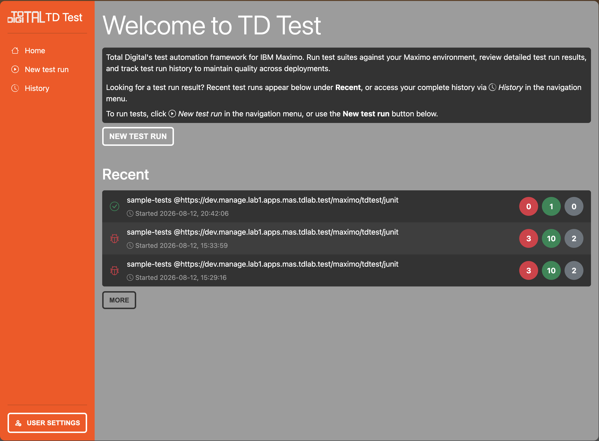
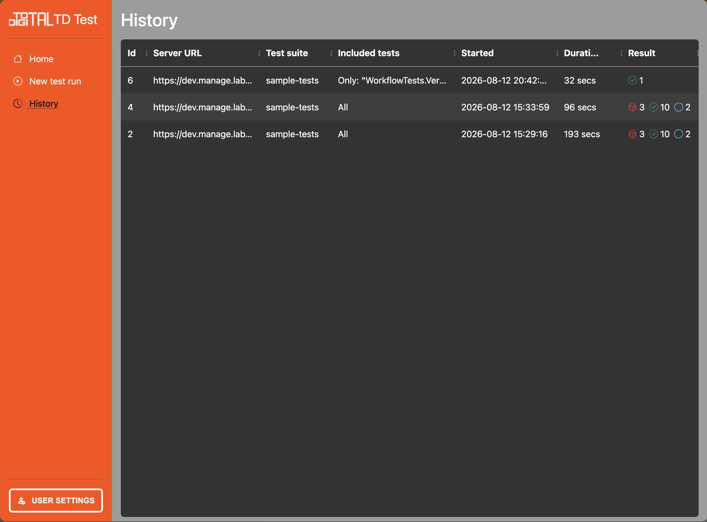
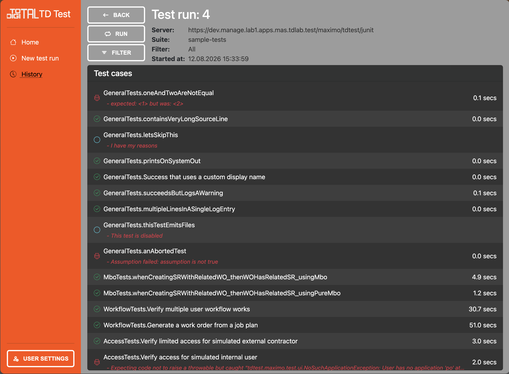
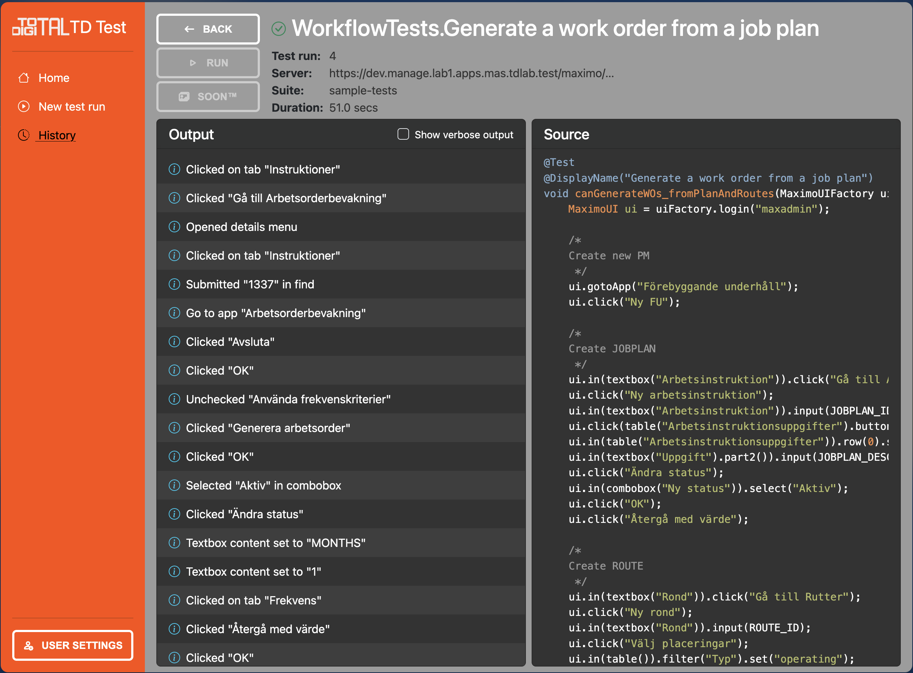
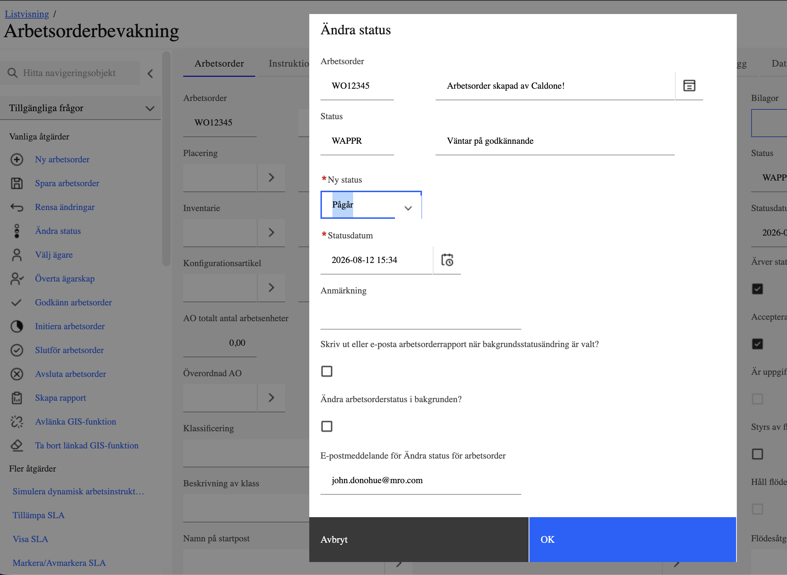

Kvalitetssäkra ditt IBM Maximo
TD Test låter er testa ert IBM Maximo automatiskt – istället för att någon sitter och klickar igenom samma kontroller manuellt varje gång något ändras. Ni beskriver en gång hur ett arbetsflöde ska fungera, och därefter kan testet köras om så många gånger ni vill: efter en uppgradering, efter en ny anpassning eller inför varje driftsättning.
Resultatet är att ni snabbt får svar på den viktigaste frågan: fungerar Maximo fortfarande som verksamheten förväntar sig? Om något gått fel visar TD Test var i flödet det hände, vad felet var och hur skärmen såg ut i det ögonblicket. Testerna påverkar inte er data – databasen lämnas som den var, så samma test kan köras hur många gånger som helst utan att lämna spår efter sig.
TD Test fungerar lika bra för äldre IBM Maximo 7.x som för nyaste IBM Maximo Application Suite (MAS), och samma test kan köras mot båda. Det gör verktyget särskilt användbart vid en uppgradering: ni kan visa, svart på vitt, att era anpassningar och processer fungerar precis som förut i den nya versionen.
Till skillnad från vanliga testverktyg arbetar TD Test direkt mot Maximo istället för via en webbläsare. Det gör testerna betydligt snabbare, mer stabila och enklare att underhålla över tid – ni slipper skriva om testerna varje gång gränssnittet ändras.
Vill ni se hur det ser ut i praktiken? Hör av er för en demonstration – eller läs vidare för detaljerna.
MÖJLIGHETER
Vad kan TD Test?
"Testar Maximo med hjälp av Maximo."
TD Test arbetar inifrån
Maximo och når därför både gränssnittet och affärslogiken m.m.
Olika typer av tester
Med TD Test kan ni täcka in de delar av Maximo som är viktigast för verksamheten – från det användarna klickar på till det som händer i bakgrunden:
- Maximos användargränssnitt i webben
- Maximos affärslogik, t.ex. reglerna för hur en arbetsorder får ändras
- Integrationer med andra system
- Era egna anpassningar av Maximo
- Hela verksamhetsprocesser, så som ni faktiskt arbetar i Maximo – inklusive flöden där flera användare turas om, t.ex. attestering och överlämning, allt inom ett och samma test
Rapportering
Resultatet sammanställs automatiskt efter varje körning och visas enkelt – i webbgränssnittet, eller skickat dit ni redan arbetar, t.ex. en kanal i Teams.
- Resultat per teststeg, inte bara godkänt eller misslyckat för hela testet
- Vid fel: felmeddelandet i klartext, tillsammans med vilket steg som brast
- Loggutdrag från tidpunkten för felet, redan framplockat
- Skärmbild av Maximo för varje steg, så ni ser vad testet såg
- Historik över tidigare körningar, för att följa kvaliteten över tid
- Resultatet kan skickas automatiskt till en Teams-kanal
Flexibilitet
Ni väljer själva när och hur testerna ska köras.
- Kör direkt vid behov, t.ex. under pågående utvecklingsarbete
- Kör ett enskilt test eller en hel grupp av tester
- Schemalägg körningar, så att de sker automatiskt
- Starta testerna i webbläsaren – eller låt dem ingå i era befintliga automatiska flöden (t.ex. Jenkins), om ni har sådana. Det är inget krav.
- Välj hur mycket loggdetaljer som samlas in per test, utan att era vanliga inställningar i Maximo påverkas





FÖRDELAR
Varför TD Test?
Snabbt
Eftersom testerna inte behöver gå omvägen via en webbläsare blir de mycket snabbare. Vi har mätt tester som går upp till 100 gånger snabbare med TD Test.
Stabilt
Vanliga testverktyg styr en webbläsare, och blir därmed känsliga för småsaker: en knapp som flyttat sig, en sida som laddar långsamt. TD Test pratar direkt med Maximo och kontrollerar gränssnittet redan innan det når webbläsaren. Resultatet är tester som går att lita på och som inte behöver skrivas om varje gång något ändras.
Kostnadseffektivt
TD Test är snabbt att komma igång med och kräver ingen egen dedikerad hårdvara – det körs som en container i en miljö ni redan har (t.ex. Podman, Docker eller Rancher). Att bygga tester för just er verksamhet går också fort, så nyttan kommer tidigt.
Användarvänligt
Ett test skrivs så som en användare arbetar i Maximo – steg för steg, med samma benämningar som står på skärmen. Många moment är dessutom färdiga att använda, som att logga in eller gå till en applikation, så att skriva tester går snabbt och enkelt.
Testerna är lika lätta att följa i webbgränssnittet:
- Tydlig återrapportering av körda tester
- Enkelt att följa ett test steg för steg
- Exakt besked om var ett test går fel
- Översikt och uppföljning av tidigare körningar
JÄMFÖRELSE
TD Test vs. Webbläsarbaserade tester
| Funktioner | Webbläsarbaserade | TD Test |
|---|---|---|
| Testet anpassar sig automatiskt när Maximos gränssnitt ändras | ||
| Samma test kan köras mot olika Maximo-versioner utan att skrivas om | ||
| Inbyggt stöd för test av integrationer | ||
| Inbyggt stöd för test av Maximos affärslogik | ||
| Kan schemalägga körningar utan extra verktyg (t.ex. Jenkins) | ||
| Rapport med all information som behövs för felsökning | ||
| Tester som lämnar systemet och databasen opåverkade | ||
| Test av olika webbläsare och webbläsarversioner |